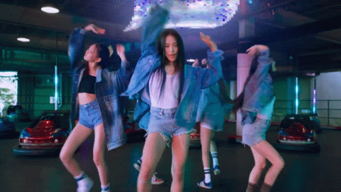
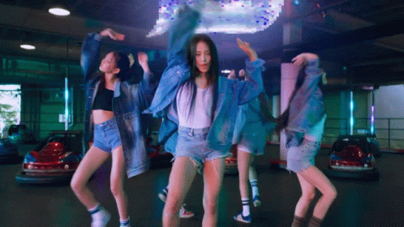

This is normal text
This is bold text
This is italic text
This is underline text
This is deleted text
This is big text
This is small text
This is subscript text
This is superscript text
This is monospaced text
| saddas | ssda | sdaasd | dasdsa | sdasda | asddaad |
|---|---|---|---|---|---|
| saddas | ssda | sdaasd | dasdsa | sdasda | asddaad | saddas | ssda | sdaasd | dasdsa | sdasda | asddjvhjhvjvhjhvaad |
Hoo-ooh-ooh-ooh Hoo-ooh-ooh-ooh Stay in the middle Like you a little Don't want no riddle 말해줘 say it back, oh, say it ditto 아침은 너무 멀어 so say it ditto 훌쩍 커버렸어 함께한 기억처럼 널 보는 내 마음은 어느새 여름 지나 가을 기다렸지 all this time Do you want somebody Like I want somebody? 날 보고 웃었지만 Do you think about me now? Yeah All the time, yeah, all the time I got no time to lose 내 길었던 하루, 난 보고 싶어 Ra-ta-ta-ta 울린 심장 (ra-ta-ta-ta) I got nothing to lose 널 좋아한다고 ooh-whoa, ooh-whoa, ooh-whoa Ra-ta-ta-ta 울린 심장 (ra-ta-ta-ta) But I don't want to Stay in the middle Like you a little Don't want no riddle 말해줘 say it back, oh, say it ditto 아침은 너무 멀어 so say it ditto I don't want to walk in this 미로 다 아는 건 아니어도 바라던 대로 말해줘 say it back Oh, say it ditto I want you so, want you, so say it ditto
CLICK THIS FOR COOL